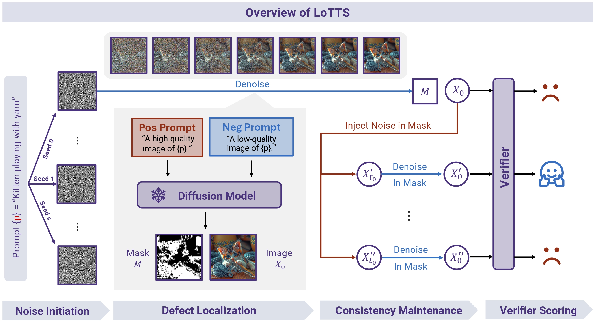
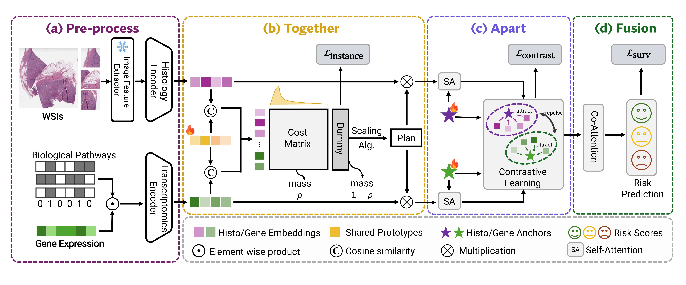
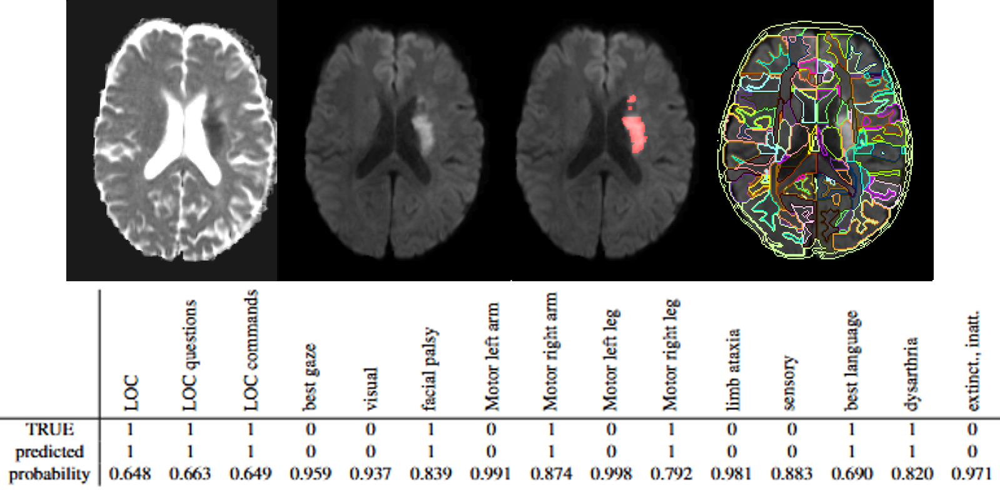
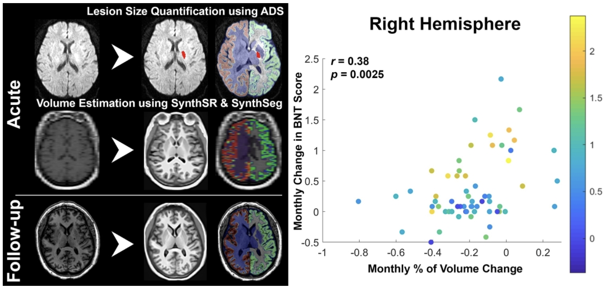
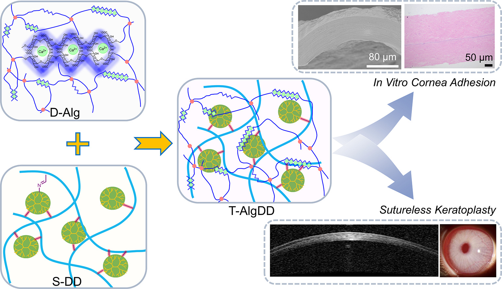

|
Supervise Less, See More: Training-free Nuclear Instance Segmentation with Prototype-Guided Prompting
Wen Zhang,
Qin Ren,
Wenjing Liu,
Haibin Ling,
Chenyu You
Preprint
abstract /
paper /
code
Accurate nuclear instance segmentation is a pivotal task in computational pathology,
supporting data-driven clinical insights and facilitating downstream translational applications.
While large vision foundation models have shown promise for zero-shot biomedical segmentation,
most existing approaches still depend on dense supervision and computationally expensive fine-tuning.
Consequently, training-free methods present a compelling research direction, yet remain largely unexplored.
In this work, we introduce \textbf{SPROUT}, a fully training- and annotation-free prompting framework for nuclear instance segmentation.
SPROUT leverages histology-informed priors to construct slide-specific reference prototypes that mitigate domain gaps.
These prototypes progressively guide feature alignment through a partial optimal transport scheme.
The resulting foreground and background features are transformed into positive and negative point prompts,
enabling the Segment Anything Model (SAM) to produce precise nuclear delineations without any parameter updates.
Extensive experiments across multiple histopathology benchmarks demonstrate that SPROUT achieves competitive performance
without supervision or retraining, establishing a novel paradigm for scalable, training-free nuclear instance segmentation in pathology.
|
|

|
Scale Where It Matters: Training-Free Localized Scaling for Diffusion Models
Qin Ren,
Yufei Wang,
Lanqing Guo,
Wen Zhang,
Zhiwen Fan,
Chenyu You
Preprint
abstract /
paper /
code
Diffusion models have become the dominant paradigm in
text-to-image generation, and test-time scaling (TTS) further improves quality by allocating more computation during inference.
However, existing TTS methods operate at the full-image level, overlooking the fact that image quality is often spatially heterogeneous.
This leads to unnecessary computation on already satisfactory regions and insufficient correction of localized defects.
In this paper, we explore a new direction - Localized TTS - that adaptively resamples defective regions while preserving high-quality regions,
thereby substantially reducing the search space. This paradigm poses two central challenges: accurately localizing defects and maintaining global consistency.
We propose LoTTS, the first fully training-free framework for localized TTS.
For defect localization, LoTTS contrasts cross-/selfattention signals under quality-aware prompts (e.g., “highquality” vs. “low-quality”) to identify defective regions,
and then refines them into coherent masks. For consistency, LoTTS perturbs only defective regions and denoises them locally,
ensuring that corrections remain confined while the rest of the image remains undisturbed. Extensive experiments on SD2.1, SDXL,
and FLUX demonstrate that LoTTS achieves state-of-the-art performance:
it consistently improves both local quality and global fidelity, while reducing GPU cost by 2-4 × compared to Best-of-N sampling.
These findings establish localized TTS as a promising new direction for scaling diffusion models at inference time.
|
|

|
Together, Then Apart: Revisiting Multimodal Survival Analysis via a Min–Max Perspective
Wenjing Liu,
Qin Ren,
Wen Zhang,
Yuewei Lin,
Chenyu You
Preprint
abstract /
paper /
code
Integrating heterogeneous modalities such as histopathology and genomics is central to advancing survival analysis,
yet most existing methods prioritize cross-modal alignment through attention-based fusion mechanisms,
often at the expense of modality-specific characteristics.
This overemphasis on alignment leads to representation collapse and reduced diversity.
In this work, we revisit multi-modal survival analysis via the dual lens of
alignment and distinctiveness, positing that preserving modality-specific structure is as vital as achieving semantic coherence.
In this paper, we introduce Together-Then-Apart (TTA), a unified min–max optimization framework that simultaneously models shared and modality-specific representations.
The Together stage minimizes semantic discrepancies by aligning embeddings via shared prototypes,
guided by an unbalanced optimal transport objective that adaptively highlights informative tokens.
The Apart stage maximizes representational diversity through modality anchors and a contrastive regularizer that preserve unique modality information and prevent feature collapse.
Extensive experiments on five TCGA benchmarks show that TTA consistently outperforms state-of-the-art methods.
Beyond empirical gains, our formulation provides a new theoretical perspective of how alignment and distinctiveness can be jointly achieved in for robust, interpretable,
and biologically meaningful multi-modal survival analysis.
|

|
SPOT: CAM-Guided Optimal Transport for Weakly Supervised Semantic Segmentation
Bingqin Wang*,
Qin Ren*,
Wen Zhang*,
Yuting He,
Zhiwen Fan,
Chenyu You
Preprint
abstract /
paper /
code
Weakly Supervised Semantic Segmentation (WSSS) relies on Class Activation Maps (CAMs) to extract spatial cues from image-level labels.
However, CAMs tend to focus on the most distinctive object parts, leaving large regions under-explored and resulting in incomplete,
spatially fragmented pseudo-labels. Prior work attempts to improve performance through prototype learning or CAM aggregation,
but such methods lack explicit modeling of the global pixel–class distribution and rely on rigid marginal-constraint
formulations that tend to collapse under large intra-class variation. We introduce SPOT,
a simple yet effective framework that formulates pseudo-label generation as CAM-guided optimal transport (OT) over dense features extracted from a pretrained visual encoder.
SPOT enforces soft CAM marginals to derive a global pixel-to-class assignment,
progressively refining pseudo-labels into more accurate and spatially coherent segmentations while suppressing noise.
SPOT handles ambiguous pixels through a gradual reallocation process, guiding uncertain regions toward confident classes under an annealed schedule,
leading to more stable and semantically consistent supervision. SPOT further enhances spatial coherence by clustering the evolving pseudo-labels with k-means,
merging fragmented activations into coherent object regions. A multi-scale OT formulation improves efficiency,
accelerating label generation without compromising accuracy. We achieve a notable performance gain on PASCAL VOC (+6.8%) and MS COCO (+3.2%) compared to seminal baselines,
demonstrating the effectiveness of our SPOT. Our framework opens up new possibilities for optimal transport to achieve globally consistent supervision under limited labels.
|
|

|
Automated Prediction of Domain-Specific NIHSS from MRI Using Machine Learning for Acute Stroke Assessment
Wen Zhang,
Shun Liu,
Andreia V. Faria,
ISMRM 2026
|
|

|
Hemispheric atrophy as a predictor for naming recovery following left hemisphere ischemic stroke
Voss Neal,
Andreia V. Faria,
Wen Zhang,
Argye E. Hillis,
Melissa D. Stockbridge
Brain Communications (Under Review)
|
|

|
Triple-crosslinked double-network alginate/dextran/dendrimer hydrogel with tunable
mechanical and adhesive properties: A potential candidate for sutureless keratoplasty
Wen Zhang*,
Shujing Liu*,
Lixiang Wang*,
Boxuan Li,
Mengzhen Xie,
Yingping Deng,
Jialuo Zhang,
Huazhang Zeng,
Li Qiu,
Lisha Huang,
Tao Gou,
Xiaobo Cen,
Jing Tang,
Juan Wang
Carbohydrate Polymers Volume 344, 2024, 122538. (IF=12.5)
abstract /
paper
An ideal adhesive hydrogel must possess high adhesion to the native tissue, biocompatibility, eligible biodegradability,
and good mechanical compliance with the substrate tissues. We constructed an interpenetrating double-network
hydrogel containing polysaccharides (alginate and dextran) and nanosized spherical dendrimer by both physical and chemical crosslinking,
thus endowing the hydrogel with a broad range of mechanical properties, adhesive properties, and biological functions.
The double-network hydrogel has moderate pore sizes and swelling properties.
The chelation of calcium ions significantly enhances the tensile and compressive properties.
The incorporation of dendrimer improves both the mechanical and adhesive properties.
This multicomponent interpenetrating network hydrogel has excellent biocompatibility, tunable mechanical and adhesive properties,
and satisfied multi-functions to meet the complex requirements of wound healing and tissue engineering.
The hydrogel exhibits promising corneal adhesion capabilities in vitro, potentially supplanting t
he need for sutures in corneal stromal surgery and mitigating the risks associated with donor corneal damage and graft rejection during corneal transplantation.
This novel polysaccharide and dendrimer hydrogel also shows good results in sutureless keratoplasty, with high efficiency and reliability.
Based on the clinical requirements for tissue bonding and wound closure,
the hydrogel provides insight into solving the mechanical properties and adhesive strength of tissue adhesives.
|
Professional Services
- Journal Reviewer: IEEE-TPAMI, IEEE-TMI, IEEE-TNNLS, TMLR, Pattern Recognition.
- Conference Reviewer: ACM MM 2025, ICLR 2026.
- Symposium Organizer: Johns Hopkins Symposium on NEXUS Fair Principles of Open Science, DC, 2025.
- Teaching Assistant: EN.530.641 Statistical Learning for Engineers (JHU), Fall 2024.
|
Honors and Awards
- Experiential Learning Student Employee of the Year, Johns Hopkins University, 2025
- Outstanding Graduate, Sichuan University, 2023
- Excellent Bachelor Thesis, Sichuan University, 2023
- Wanglaoji Scholarship (50 students university-wide), Sichuan University, 2021.
- First Class Scholarship (top 1%), Sichuan University, 2020, 2021, 2022.
|
{kind=link}